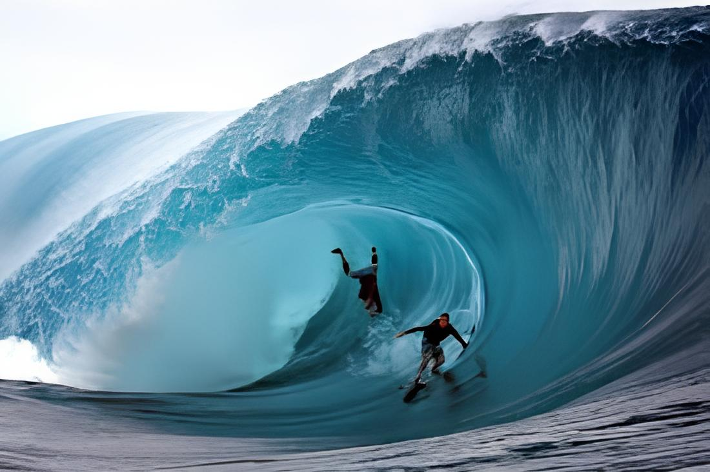
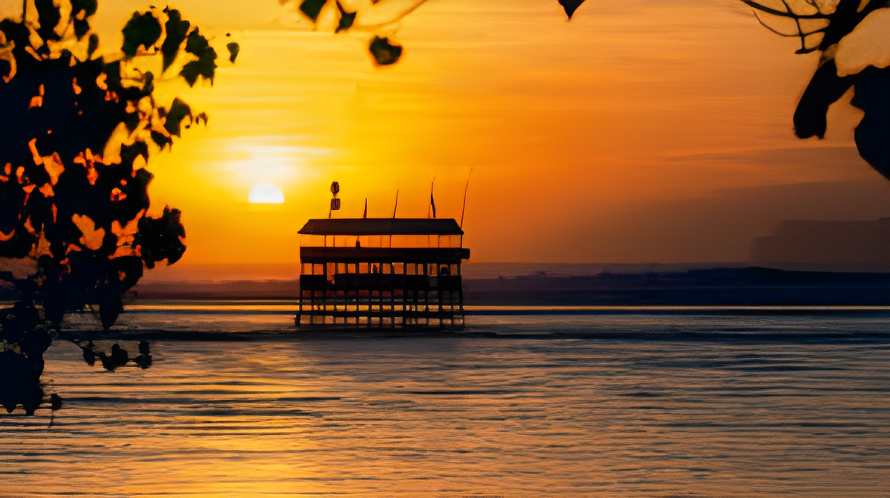
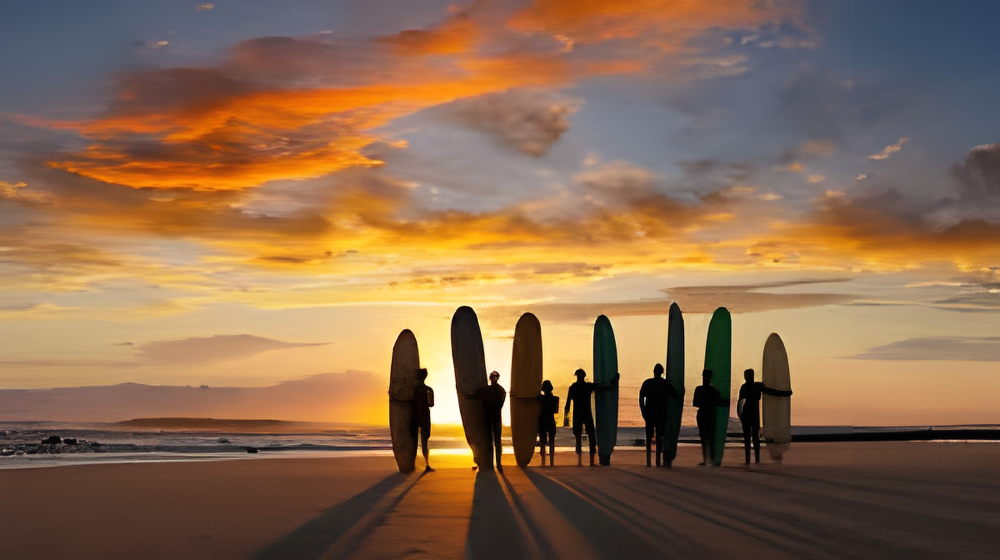
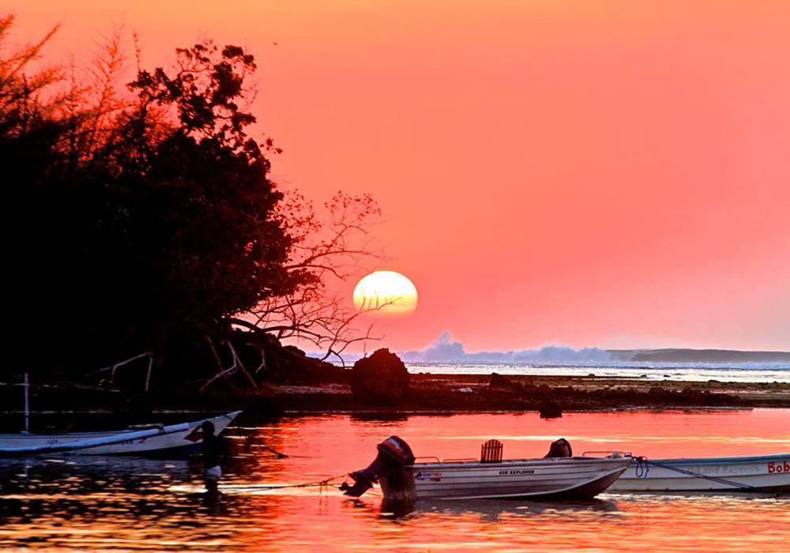

G-Land
Pantai indah dengan ombak surfing kelas dunia.
Galeri Foto






Informasi Detail
G-Land, atau yang dikenal juga sebagai Pantai Plengkung, adalah salah satu destinasi selancar paling terkenal di dunia. Terletak di kawasan Taman Nasional Alas Purwo, pantai ini awalnya hanya dikenal oleh para nelayan dan masyarakat lokal sebagai bagian dari wilayah pesisir selatan yang berombak besar karena langsung berhadapan dengan Samudra Hindia. Nama “Plengkung” dipercaya berasal dari bentuk garis pantainya yang melengkung, sedangkan nama “G-Land” diberikan oleh peselancar asing pada tahun 1970–an.
Keunikan G-Land
- Ombak Tak Tertadingi: Disebut salah satu dari tujuh ombak terbaik dunia, dengan karakteristik ombak panjang, cepat, tinggi (bisa 4-8 meter), dan membentuk tabung (barrel) yang hampir sempurna, ideal untuk peselancar tingkat lanjut.
- Bagian Bagian Ombak Terkenal: Memiliki spot legendaris seperti "Money Trees" (ombak panjang dan kuat) dan "Tiger Tracks" (lebih bersahabat untuk tingkat menengah).
- Lokasi di Taman Nasional Alas Purwo: Terletak di kawasan hutan asri, menawarkan pemandangan alam unik dengan kombinasi hutan hijau, pasir putih, dan laut biru, serta satwa liar seperti kera dan rusa yang sesekali terlihat.
- Pusat Selancar Internasional Sering menjadi tuan rumah kompetisi selancar dunia (World Surfing League) karena kualitas ombaknya yang luar biasa, menarik peselancar dari Australia, Amerika, dan Eropa.
- Sejarah dan Julukan: Dikenal sebagai "G-Land" karena teluknya yang menyerupai huruf G dan dianggap sebagai surganya pencari ombak profesional.
Aktivitas yang Bisa Dilakukan
- Berselancar dengan ombak besar kelas dunia
- Menikmati keindahan bawah laut di sekitar G-Land dengan snorkeling atau menyelam.
- Menjelajahi dan menikmati pemandangan alam yang eksotis dan hutan tropis alas purwo.
- Menikmati Matahari Terbenam
- Mengunjungi Penangkaran Penyu
Info Praktis
- Lokasi: Teluk Grajagan, Taman Nasional Alas Purwo, ujung tenggara Pulau Jawa, di seberang Bali.
- Biaya Masuk: 15.000-30.000 untuk warga domestik dan 150.000 untuk wisatawan mancanegara
- Waktu Terbaik Berkunjung: Antara April dan Oktober, ketika angin bertiup lepas pantai dan gelombang dari Samudra Hindia paling konsisten dan besar.
- Transportasi: Akses paling umum menuju G-Land adalah dengan kapal cepat (speedboat) dari Bali (sekitar 2,5 hingga 3,5 jam perjalanan), atau melalui jalur darat yang lebih panjang dari Banyuwangi menuju Pantai Grajagan, diikuti perjalanan perahu atau berjalan kaki melalui hutan taman nasional.
- Akomodasi: Beberapa kamp selancar, seperti Bobby's, Jack's, dan Jawa Jiwa G-Land Surf Camp, menyediakan akomodasi di lokasi terpencil ini.
Peraturan Kunjungan
- Menjaga Kebersihan
- Hormati Alam dan Satwa Liar
- Tetaplah berada di jalur yang sudah ditentukan untuk trekking atau berkendara
- Bawa perbekalan yang cukup, termasuk air minum, P3K, dan perlengkapan keamanan yang diperlukan
- Dilarang mengambil benda-benda dari alam, termasuk batu, kayu, tumbuhan, atau daun dari hutan.